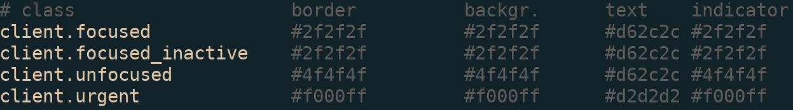
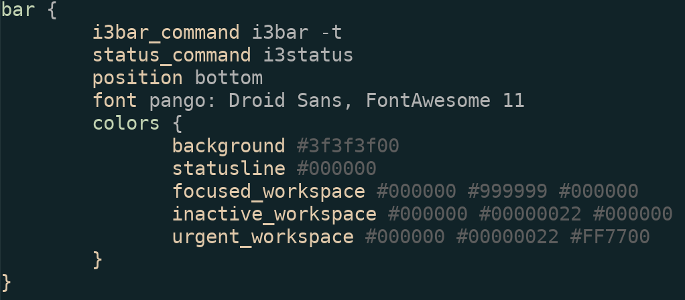

i3-wm
Tiling never felt so good
Who are we?
Matt Kelsey
Programmer - Workflow Fanatic
@mattkelsey
I'm Jesse!
Sysadmin - Artist
@jpwall

Brief History of i3
Inspired by wmii
First commit April, 2009
Michael Stapelberg
Wait, what is wmii?
Stands for Window Manager Improved 2
Very similar to i3...
...but looks different and handles configs different
Not in development anymore
What i3 is...
Window manager
Simple status
Simple application launching
Powerful tiling
What i3 is not...
Desktop environment
display manager, utility applications, etc
FIVE MINUTE INSTALL
:
Well this is embarrassing...
sudo apt-get install x-window-systemsudo apt-get install i3echo "exec i3" >> ~/.xinitrcstartx
FUNCTIONALITY
Configs
Copy template from...
/etc/i3/config~/.i3/config~/.config/i3/config
Keybinds
A point of much contention...
Highly configurable (who'd have guessed?)
bindsym $mod+Shift+q poweroffbindsym $mod+Shift+f exec firefox
A note on --no-startup-id
Workspaces, i3bar, and window management!
Buckle up.
i3 v. j4
j4status v. i3status v. py3status
j4-dmenu-desktop v. i3-dmenu-desktop (no equivalent to i3-dmenu)
AESTHETICS
Colors
Anything in i3 can have a user-specified color
Is specified with a hex-value (sometimes opacity values too)
i3 Window Color Declarations
i3 Bar Color Declarations
Setting the Background
Two different methods
Option 1: feh
Install feh
Add one line to end of i3 configuration file
exec --no-startup-id feh --bg-scale ~/Pictures/cloudsAF1080.jpg
Option 2: xsetroot
Preferred by some over feh
Lighter install (xsetroot only does one thing)
Capability of setting background as solid color
exec --no-startup-id xsetroot -solid "#333333"